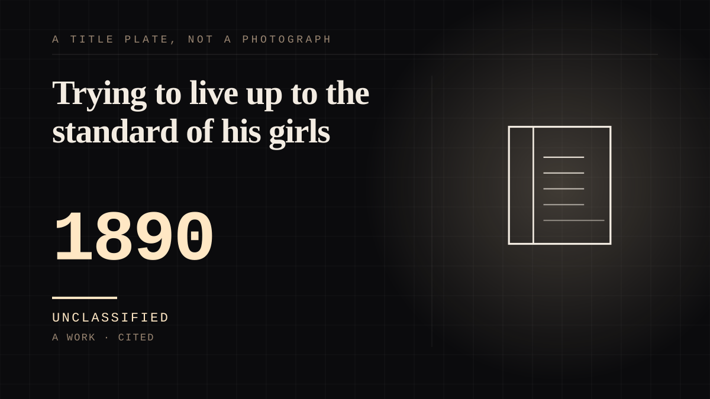

A work · 1890 ·
Trying to live up to the standard of his girls
A pen-and-ink standard of American womanhood, sold through the magazines and advertisements of the 1890s, that thousands of real women were documented trying to live up to - and that could never be disappointed, because it was never a person.

She was a drawing, and the labour of living up to her was real. The Gibson Girl - the character created by Charles Dana Gibson in the 1890s for advertisements, run through the magazines of the Gilded Age - had no body, no biography and no lines. In 1894 Life printed the sentence that gives this entry its title: a writer wondering whether Gibson knew 'there are thousands of American girls, from Oshkosh to Key West, who are trying to live up to the standard of his girls.' The direction of the traffic is the point. Ink specified a standard; the readers supplied the posture, the interior and the life. Nothing she was said to want could ever be disconfirmed, which is what her shelf is for. The test is whether the figure can be the author of its own behaviour, and a pen-and-ink figure cannot: she could not contradict the women who rearranged themselves around her, and she could not disappoint them either. The sources make the same point from the other side, and the honest entry keeps their disagreement. The popular legend says Gibson's wife, Irene Langhorne, and her sisters were the originals; the article on the character will allow only that she 'may have been the original model', while the article on Gibson says the legend is contrary to fact - 'The first Gibson Girl appeared in 1890, more than two years before Gibson met the Langhorne family.' The face the audience organised itself around was not a portrait of anyone in particular. And the blank surface carried whatever its maker believed. The article on the character connects the figure to Gibson's own views of the United States as a white nation and to his eugenicist ideology - the reminder that a surface with no interior is a perfect vehicle for the person holding the pen. The dating is left visibly imperfect rather than smoothed: one article commits to 1890 and carries a portrait caption reading 'created 1898'; the other will say only 'in the 1890s'. This entry takes the sentence that commits. The name outlived the fashion once, oddly: the SCR-578 survival radio carried by wartime aircraft was nicknamed the Gibson Girl for its shape. A standard drawn for magazines, adopted as a life, and finally a piece of equipment in a life raft.
Where it sits
1800 1800-1899 · 1890 1899
Provenance · 2 source record(s)
- retrievableThe character created by Charles Dana Gibson in the 1890s for advertisements, spanning the late Gilded Age and Progressive Era; the 1894 Life line, 'there are thousands of American girls, from Oshkosh to Key West, who are trying to live up to the standard of his girls'; the connection drawn to Gibson's views of the United States as a white nation and his eugenicist ideology; Irene Langhorne 'may have been the original model'; the SCR-578 survival radio nickname.Wikipedia. 'Gibson Girl.' ↗
- retrievableContrary to popular legend, Gibson's wife and her Langhorne sisters did not inspire the Gibson Girls: 'The first Gibson Girl appeared in 1890, more than two years before Gibson met the Langhorne family.' The same article carries a portrait caption reading 'Gibson Girl, created 1898', which the entry records as a disagreement rather than resolving it.Wikipedia. 'Charles Dana Gibson.' ↗
Connected · 3 out, 0 in
It sits in